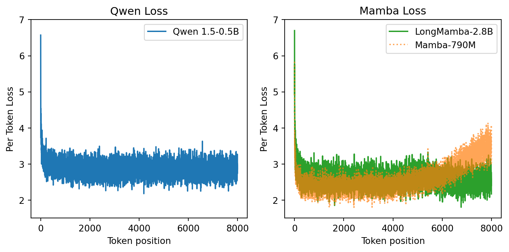
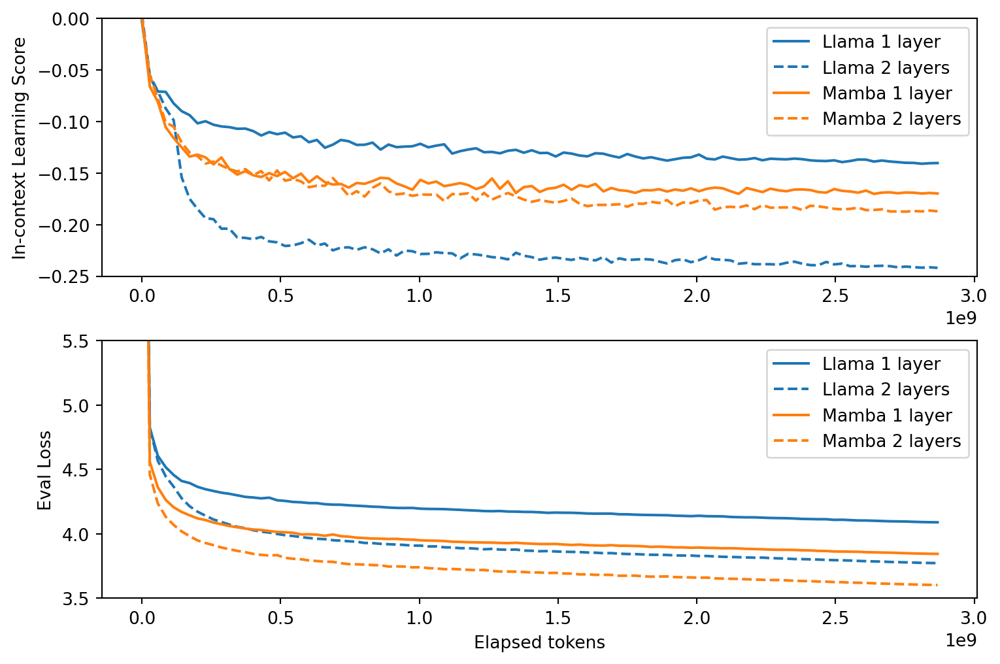

Introduction
Mamba (Gu and Dao 2023) is an architecture based on a Selective Structured State-Space model. Recently it has taken the community by storm – and for a good reason. It features linear complexity in the sequence length and outperforms transformers of the similar size in the language modelling task. It also benefits from a hardware-aware implementation. It has already been applied to tasks such as medical image segmentation (Ma, Li, and Wang 2024). We are excited to see if Mamba could be used to study ultra-high energy particles in a gigantic neutrino telescope in the South pole.1
Interestingly, the model design has been in part motivated by the mechanistic interpretability (Elhage et al. 2021) studies and specifically the idea of in-context learning and induction heads (Olsson et al. 2022).
So here we will take a look at the in-context learning in Mamba.
In-Context Learning
By in-context learning we mean the ability of the model to learn during the inference time using the information from the context. This most clearly manifests itself as the decrease of the per-token loss as a function of the token position in the sequence, see Figure Figure 1.
Induction heads are believed to be central to the in-context learning. So what are they? Induction heads are circuits that allow model to predict [B] after [A] if the pair [A][B] has already appeared in the context.2 Induction heads are already present in two layer attention only transformers (but not in single layer ones).
Mamba and the predecessor model H3 (Fu et al. 2022) have been designed with the idea of induction heads in mind.
Mamba: phenomenological study
How can we check the in-context learning ability of Mamba? One simple test is to feed the model with garbage repeated twice. Quite amusingly, transformers are able to learn the pattern and predict the second half of the sequence with high accuracy, like in Figure 2.
So what about mamba? We used this model. Here is the result:
Ok, what about longer contexts? The mamba should be able to handle really long sequences, right?

Oops! So, we can see that a small transformer deals with this easily, but Mamba struggles. Notice that this is a very artificial test though. The data is completely out of distribution.3 Maybe the model learns N-gram statistics too well and the induction heads cannot change the predictions.
So what about normal texts?

In-Context Learning Score
Introduce the score…

Understanding Selective SSMs
Preliminaries
Mamba is more intricate than a transformer since it involves a selective state space model and gating, see (Gu and Dao 2023). It is known, however, that already attention-only transformers exhibit interesting behavior (Elhage et al. 2021). Can we analogously consider a model based on the SSM, without convolutions and gating?
We have trained several models on PG-19 dataset (Rae et al. 2019). Those included: single layer and two layer transformers with RoPE position encoding, Mamba, and SSM-only models. Mamba and Transformer training is shown in figure Figure 6, while SSMs and transformers are shown in figure Figure 7.

Several observations are in order. First, we can see that an SSM only model is already pretty solid in language modelling. Secondly, both single layer attention-only transformer and SSM struggle with in-context learning. This is expected since we know that induction heads can only form in two-layer models (Elhage et al. 2021). At the same time, SSM has lower loss.4 At two layers things become interesting. The transformer experience a “phase transition” and the score quickly drops.5 But for the 2-layer SSM the drop is far less significant. In fact, we have checked SSMs up to 16 layers and they cannot match the score of two layer attention only transoformer. This is in contrast to the loss, which is lower for SSMs. One can speculate that Selective SSM is better at approximating N-gram statistics, but worse at in-context learning. Can we try to understand why is this the case?
Mathematical Formulation of SSM
Originally, the discovery of the induction heads became possible due to a neat mathematical formulation of transformers (Elhage et al. 2021). Here we report our initial attempt to provide a similar formulation for the SSMs.
One difficulty that we immediately encouter is the presence of different dimensions in the model: the hidden dimension (in Mamba it is twice of the residual stream), the sequence length, and the state-space dimension. This makes it hard to distinguish between different multiplications. To make things as clear as possible, we will write all indices explicitly and use the Einstein summation convention. Furthermore, we will denote indices in such a way that it is clear what they mean. Namely, we will use letters \(s, t, r\) for the sequence position, \(i, j, k, l\) for the hidden dimension,6 and \(\alpha, \beta\) for the state-space dimension. We will ignore the batch dimension since it could be trivially added.
The usual attention
To warm up, let’s start with the usual transformer. The output of one attention head can be written as \[ y_{t\,i} = A_{t\,s}(x) \, v_{s\,i}, \] where \(A_{t\,s}\) are the attention scores whcih depend on all inputs, but have only the sequence indices. Notice that we sum over the repeated indices. Writinig this equation explicitly we have \[ y_{t\,i} = \text{softmax} \left( x_{s\, k} W^Q_{k\, \alpha} W^K_{l\, \alpha} x_{t\, l} \right)\; W^O_{i\, \beta}\, W^V_{j\, \beta}\, x_{s\, j}. \] Notice that $ W^Q_{k, } W^K_{l, }$ and \(W^O_{i\, \beta}\, W^V_{j\, \beta}\) are low-rank matrices (here \(\alpha\) goes from 1 to hidden_size/num_heads). We can rewrite the previous equation as7 \[ y_{t\,i} = \text{softmax} \left( x_{s\, k} W^{KQ}_{k\,l} x_{t\, l} \right)\; W^{OV}_{i\,j}\, x_{s\, j}. \tag{1}\]
Now, after some index gymnastic, let’s move to SSMs. The input to the SSM is dented \(x_{s, i}\), the output is \(y_{s, i}\). Notice that in our formulation the hidden state never shows up. Here we list the parameters of the SSM:
\[
\begin{aligned}
\Delta_{t\, i} (x) &= \text{softplus}(W^\Delta_{i\, j}\, x_{t\, j}),\\
B_{t\, \alpha}(x) &= W^B_{\alpha\, i} \, x_{t\, i},\\
C_{t\, \alpha}(x) &= W^C_{\alpha\, i} \, x_{t\, i},\\
\bar{A}_{t\,i\,\alpha}(x) &= \exp \left(\Delta_{t\, i}(x)\, A_{i\, \alpha}\right),\\
\bar{B}_{t\,i\,\alpha}(x) &= \Delta_{t\, i}(x) B_{t\, \alpha}(x).\\
\end{aligned}
\tag{2}\] We sum over the dummy indices. By dummy indices we mean the indices that appear twice on one side of the euation. For example, \(B_{t\, \alpha}(x) = W^B_{\alpha\, i} \, x_{t\, i}\) is a shorthand for \(B_{t\, \alpha}(x) = \sum_i W^B_{\alpha\, i} \, x_{t\, i}\). In matrix notations, we would write it as \(B = X\, \left( W^B \right)^T\). But notice that there is no sum over \(i\) and \(t\) in \(\bar{A}_{t\,i\,\alpha}(x) = \exp \left(\Delta_{t\, i}(x) \cdot A_{i\, \alpha}\right)\) since \(i\) and \(t\) appear on both the left and the right hand side of the equation. This is precisely the convention of the torch.einsum function.
Selective SSM
Now, we are ready to take a deep breath and write the output of the SSM: \[ y_{t\,i} = x_{t\,k} \, W_{\alpha \, k}^C \; \exp{\left(A_{\alpha\, i} \sum_{r=s+1}^{t} \Delta_{r\,i}(x)\right)}\; W_{\alpha\,j}^B \,x_{s\,j}\; \Delta_{s\,i}(x)\, x_{s\,i}. \tag{3}\] Let’s rewrite this as \[ y_{t\,i} = q_{t\, \alpha} \; g^{\alpha\beta}_{s\,t\,i}(x) \; k_{s\, \beta} \; v_{s\,i}, \tag{4}\] where \[ \begin{aligned} q_{t\, \alpha} &= W_{\alpha \, k}^C\,x_{t\,k} ,\\ k_{s\, \beta} &= W_{\alpha\,j}^B \,x_{s\,j} ,\\ v_{s\,i} &= \Delta_{s\,i}(x)\, x_{s\,i},\\ g^{\alpha\beta}_{s\,t\,i}(x) &= \exp{\left(A_{\alpha\, i} \sum_{r=s+1}^{t} \Delta_{r\,i}(x)\right)}\, \delta_{\alpha\beta}. \end{aligned} \]
This looks very similar to attention!
More specifically, the linear attention without softmax. Matrices \(W^B\) and \(W^C\) are the analogues of the query and the key matrices in the attention mechanism. They project from the hidden dimension to the much smaller state space dimension. Notice that this is the feature of the selective SSM. In the usual SSMs \(B\) and \(C\) do not depend on \(x\) so this analogy to keys and queries is lost.
There are important differences though. First, instead of multiple attention heads with different projections, we have only one, but keys and queries are multiplied with a “metric” \(g^{\alpha\beta}_{s\,t\,i}(x)\) which is different for every coordinate \(i\) across the hidden dimension.8 So, in some sense, we have as many attention heads as there are hidden dimensions.
Secondly, the value is not just a linear transformation of the token embedding as in the usual attention mechanism Equation 1. Instead, it is gated by the matrix \(\Delta_{s\,i}(x)\), which in turn depends on the input.
Those differences might be crucial. To understand why, let’s recall that there are exponentially many almost orthogonal vectors in high dimensions, see e.g.~(Tao 2013). So if we perform a linear transformation of the input, like in Equation 1, we get a new vector that could live in many of different, almost orthogonal subspaces. In the case of the Selective SSM, every “attention head” only writes a single coordinate. Of course, there is a dependence on the other coordinates via \(\Delta\), but due to the softplus function, it serves rather as a gate than as a linear transformation. Therefore, one can speculate that the SSM has access to as many orthogonal subspaces as there are hidden dimensions, whereas the usual attention can utilize exponentially more. This might seem as a plausible explanation of why we do not observe the phase transition in the SSMs. However, we need to be very cautious here. Equation 3 is very non-linear in \(x\) so our intuition from the usual attention might be misleading.
References
Elhage, Nelson, Neel Nanda, Catherine Olsson, Tom Henighan, Nicholas Joseph, Ben Mann, Amanda Askell, et al. 2021. “A Mathematical Framework for Transformer Circuits.” Transformer Circuits Thread 1.
Fu, Daniel Y, Tri Dao, Khaled K Saab, Armin W Thomas, Atri Rudra, and Christopher Ré. 2022. “Hungry Hungry Hippos: Towards Language Modeling with State Space Models.” arXiv Preprint arXiv:2212.14052.
Gu, Albert, and Tri Dao. 2023. “Mamba: Linear-Time Sequence Modeling with Selective State Spaces.” arXiv Preprint arXiv:2312.00752.
Ma, Jun, Feifei Li, and Bo Wang. 2024. “U-Mamba: Enhancing Long-Range Dependency for Biomedical Image Segmentation.” arXiv Preprint arXiv:2401.04722.
Olsson, Catherine, Nelson Elhage, Neel Nanda, Nicholas Joseph, Nova DasSarma, Tom Henighan, Ben Mann, et al. 2022. “In-Context Learning and Induction Heads.” arXiv Preprint arXiv:2209.11895.
Rae, Jack W, Anna Potapenko, Siddhant M Jayakumar, Chloe Hillier, and Timothy P Lillicrap. 2019. “Compressive Transformers for Long-Range Sequence Modelling.” arXiv Preprint. https://arxiv.org/abs/1911.05507.
Tao, Terence. 2013. “A Cheap Version of the Kabatjanskii-Levenstein Bound for Almost Orthogonal Vectors.” https://terrytao.wordpress.com/2013/07/18/a-cheap-version-of-the-kabatjanskii-levenstein-bound-for-almost-orthogonal-vectors/.
Tsai, Yao-Hung Hubert, Shaojie Bai, Makoto Yamada, Louis-Philippe Morency, and Ruslan Salakhutdinov. 2019. “Transformer Dissection: A Unified Understanding of Transformer’s Attention via the Lens of Kernel.” arXiv Preprint arXiv:1908.11775.
Footnotes
This telescope is an instrumented cubic kilometer of ice, called IceCube. It has more than 5000 photo detectors that collect the data. Transformers are in general well suited for this task. But their quadratic dependence on the input length doesn’t allow to study the brightest events that have hundreds of thousands of pulses.↩︎
Think of [A] being “Harry” and [B] being “Potter”. If “Harry Potter” was present in the context already, the model will predict “Potter” after “Harry” with high probability.↩︎
Garbage in – garbage out. It is actually really impressive that transformers deal with this so easily↩︎
We use the same tokenizer and the same model size with only the learning rate tuned for each model separately.↩︎
Our plots agree very well with (Olsson et al. 2022) except that the phase change happens earlier in training. We use a rather small vocab size of 16384 and perhaps much smaller batch size of 24 sequence of 2048 tokens.↩︎
Notice that Mamba expands the residual stream by a factor of two, so the hidden dimension is twice the embedding dimension.↩︎
See (Elhage et al. 2021), where OV and KQ compositions have been introduced.↩︎
Interestingly, the exponential depending on sequence positions of the source and destination tokens also appears in the case of the usual position embeddings (Tsai et al. 2019), but in the usual transformers it doesn’t depend on the token embeddings.↩︎